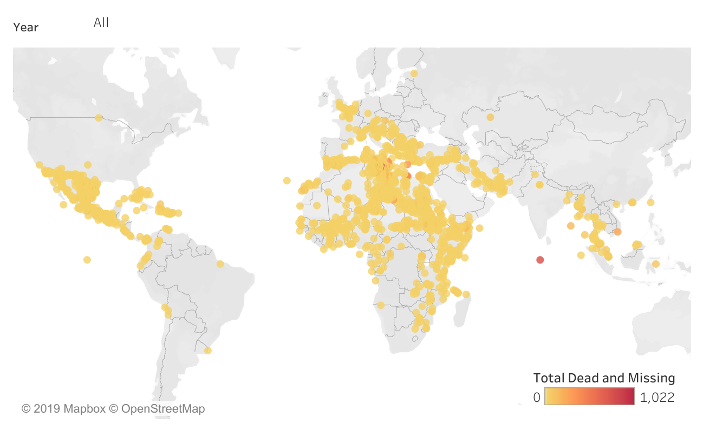
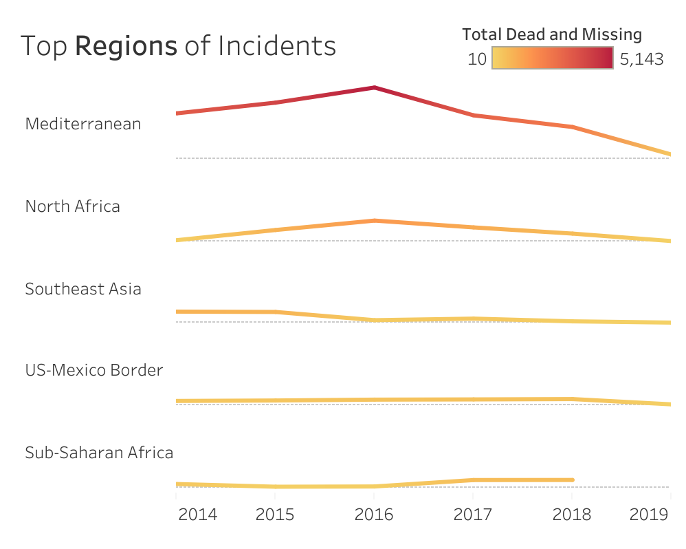
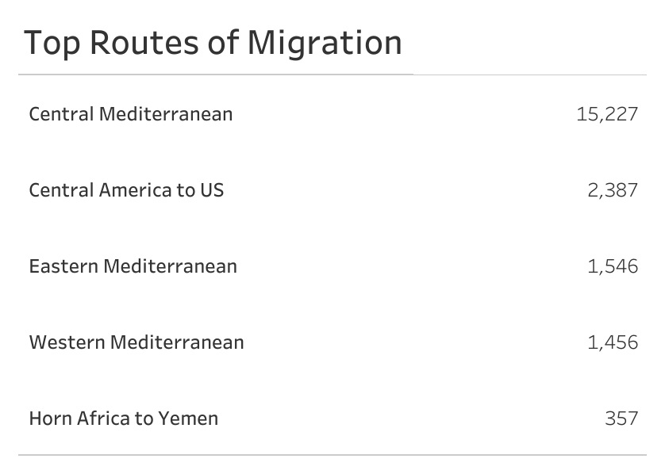
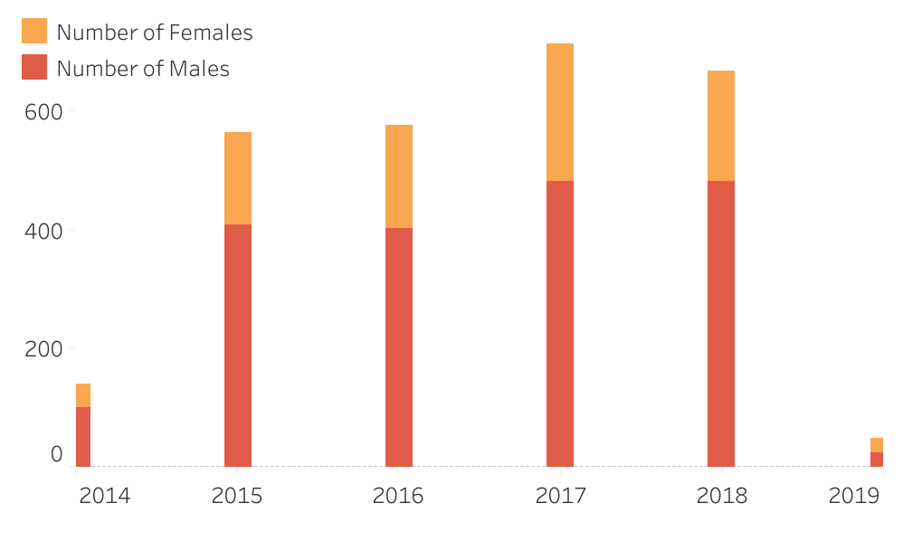
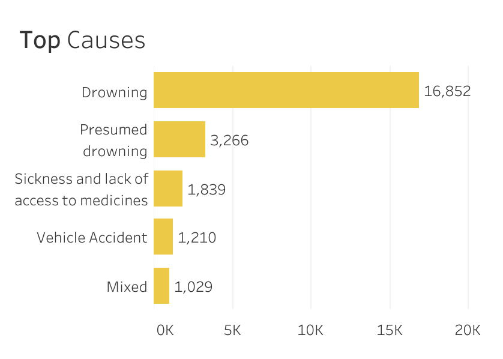

Check out more of my work
Vanessa Liang



Missing Migrants Project tracks deaths of migrants, including refugees and asylum-seekers, who have gone missing along mixed migration routes worldwide. The research behind this project began with the October 2013 tragedies, when at least 368 individuals died in two shipwrecks near the Italian island of Lampedusa. Since then, Missing Migrants Project has developed into an important hub and advocacy source of information that media, researchers, and the general public access for the latest information.
The above map displays the regional distribution of the incidents in the past five years.

Mediterranean stands out; North Africa, Southeast Asia, US-Mexico Border and Sbu-saharan Afraica top the list. The conflicts in Africa and the Middle East, particularly the war in Syria, have kept the migration rate high in Mediterranean. After Mediterranean, the region that features most heavily is North Africa, particularly Libya, which is the major departure point for illegal migrants setting off for Europe.

Central Mediterran route, from Sub-Saharan Africa to Italy, which is known as the deadiest migration route, topped the list of routes with most incidents. Many died on the way crossing the desert and went missing in the sea. Central America, composing of El Salvador, Guatemala, and Honduras, ranked second in the list. Extreme socioeconomic inequality, natural disasters and poor governance, are the root causes of the migration routes. The Eastern Mediterranean route refers to the sea crossing from Turkey to Greece. Refugees seeking shelter from Syria's war to the EU via this route

The number of dead and missing rose sharply from 2014 to 2015, and experienced an significant increase in 2017. When breaking down the number to gender, the number of males victims was almost three times higher than the one of females.

As Mediterran route is the most active and deadiest route, it is obvious that drowning is the major cause of the tragics. Followed are sickness, vehicle accident, and mix of multiple causes.